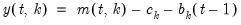
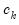
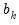

@coldetrend Matrix Utility Detrend each column of a matrix. Syntax: @coldetrend(m) m: matrix Return: matrix Returns the matrix containing the results from detrending each column of m. Detrending produces the residuals of the OLS regression of the data in column versus an intercept and implicit time trend. For each element of the output matrix :  where  and  are the intercept and slope coefficients of a regression of the data in column on a constant and time trend. If there are missing values in a column, they are ignored. Examples matrix m1 = @mnrnd(50, 4) matrix m1d = @coldetrend(m1) detrends each column of M1 and places the results in M1D. This operation is equivalent to vector cintercepts = @cintercept(m1) vector ctrendcs = @ctrendcoef(m1) matrix m2d = m1 - @kronecker(@ones(m1.@rows), cintercepts.@t) - @kronecker(@range(0, m1.@rows-1), ctrendcs.@t) where @cintercept and @ctrendcoef are used to compute the coefficients of the column trend regressions. Cross-references See also @cintercept and @ctrendcoef. See also @demean, @detrend, and @coldemean.


 versus an intercept and implicit time trend. For each element of the output matrix
versus an intercept and implicit time trend. For each element of the output matrix  :
: on a constant and time trend. If there are missing values in a column, they are ignored.
on a constant and time trend. If there are missing values in a column, they are ignored.